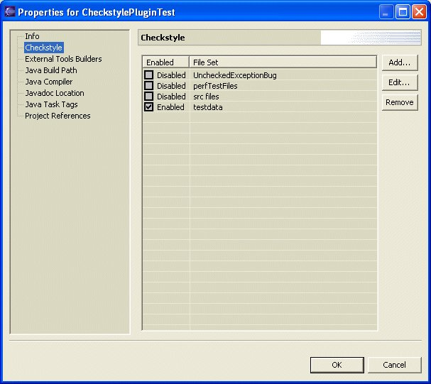
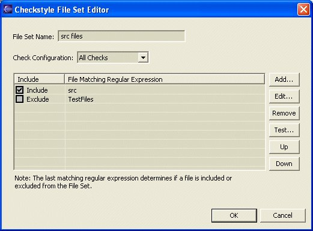
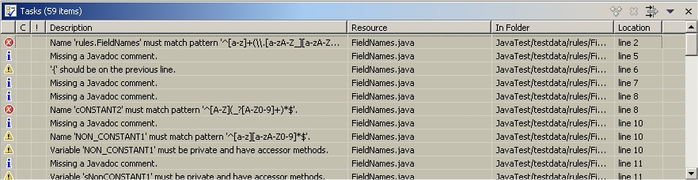

Eclipse Checkstyle Plug-in
Screen Shots
Preferences
Check Configuration Editor
Rule Editor
Project Properties 
File Set Editor 
Tasks View 
Copyright © 2002-2004 David Schneider. All Rights Reserved.